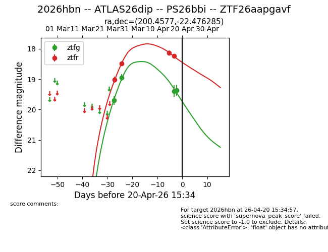
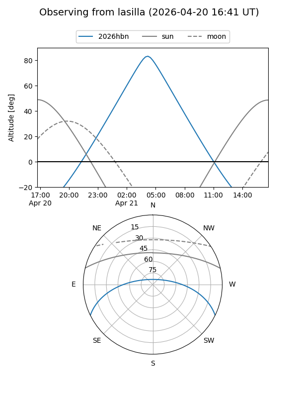
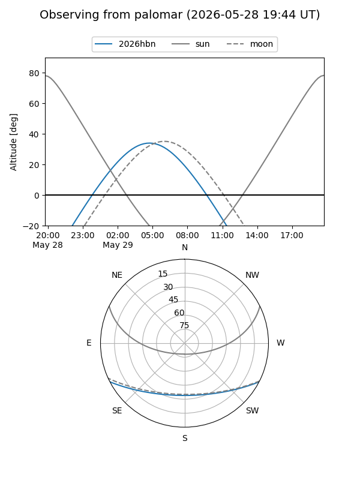
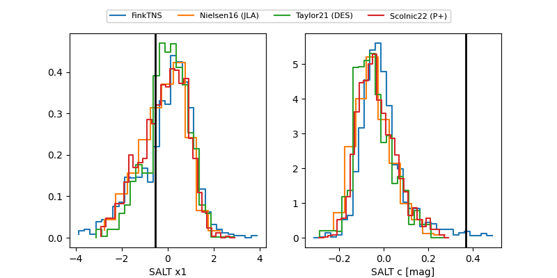

2026hbn
Target 2026hbn at 2026-04-20 15:45
Aliases and brokers:
FINK: link
Lasair: link
ALeRCE: link
TNS: link
YSE: link
alt names
ZTF26aapgavf (ztf,fink_ztf)
2026hbn (tns,yse)
ATLAS26dip (atlas)
PS26bbi (panstarrs)
Coordinates:
equatorial (ra, dec) = 200.4577,-22.47628
equatorial (HMS+DMS) = 13:21:49.84,-22:28:34.62
galactic (l, b) = (312.0899,+39.85440)
Flags:
Photometry:
last ztfg=19.37, ztfr=18.24
4 ztfg, 4 ztfr detections
Lightcurve

Visibility


Additional plots
